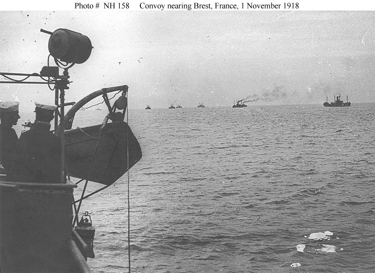
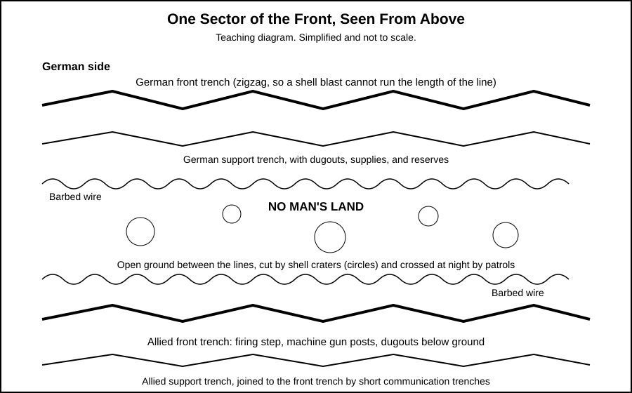
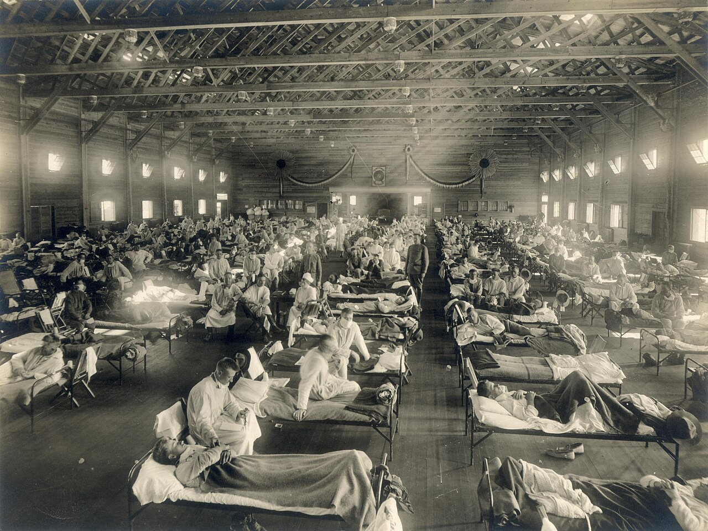

Directions: Follow one draftee through the whole mobilization system, from his registration card to the front in France. Work through all five stations in order. At the end, chart how the parts of the system depended on one another.
The draftee in these stations is a sample case, created for this lesson to show how the system worked. His record follows the standard forms and steps every draftee passed through. His name in the sample record is Thomas Reed, age 22, a farm worker from Ohio.
Source: Sample record, created for this lesson, following the standard registration card and classification steps of the Selective Service System, 1917 to 1918. It is a teaching sample, not the record of a real soldier.
Registration, June 5, 1917. Reed registers at his local board in Ohio on the first registration day and gives his name, address, age, birthplace, occupation, and employer, and whether anyone depends on him for support. His card is signed and sent to the local board.
Classification. The board examines Reed and classifies him in Class I: single, no dependents, physically fit. Men in Class I are called first. His order number is drawn by lot in Washington.
Induction and training. Reed is ordered to report, passes a medical examination, and is sent by train to a training camp. There he is issued a uniform and equipment, assigned to a company, and trained for several months before his division sails for France.
What three decisions did the local board make about Reed, and on what information?
Why did it matter to the whole system that registration, classification, and induction were run by local civilian boards rather than by the army itself?
Source: Photograph by Robert W. Neeser, from USS Rambler, November 1, 1918, Naval Historical Center, photograph NH 158.

Reed's division crosses the Atlantic in a convoy: troopships and supply ships sailing together under destroyer escort. The ships zigzag, run dark at night, and keep radio silence. A submarine that attacks the group can be fired on by the escorts and can hit only one ship with one torpedo. Reed spends the crossing in a crowded bunk below deck, drills in a life belt, and watches the escorts at the edge of the formation.
Name two features of the crossing described here that made a U-boat attack harder, and explain how each one worked.
What would have happened to the army in France if the convoy system had failed and sinkings had stayed at their early 1917 level?
Source: Teaching diagram drawn for this lesson. It is a diagram of how a trench system worked, not a map of a real place, and it is not to scale.

Reed's company takes over a stretch of front trench. To attack, his unit must cross no man's land, pass through the enemy wire, and take the German front trench before German reserves in the support trench counterattack. Machine gun posts in the German line can fire along the wire. Artillery on both sides can shell any part of the system shown.
Why is the front trench drawn as a zigzag instead of a straight line? Use the diagram caption in your answer.
Trace an attack on the diagram, step by step. At which two points is the attacking unit in the greatest danger, and what creates the danger at each point?
Source: Labeled summary, written for this lesson. This station does not quote a letter. It summarizes, in the lesson author's words, what a soldier in Reed's position typically reported home in the autumn of 1918, based on the documented conditions of the Meuse-Argonne fighting. Treat it as a summary, not as a document.
Summary. Writing from a rest area behind the Argonne in October 1918, the soldier tells his family that he is well, which the censor requires letters to suggest even when a unit has been in hard fighting. He describes rain, mud that fills the dugouts, cold food, and long marches at night on crowded roads. He asks for warm socks and tobacco, says the mail takes weeks, and reports that men in his company have been sent back sick with influenza. He cannot name his location, his unit, or its losses, because the censor will cut them. He closes by saying the men expect the war to end soon and want only to come home.
List three things the summary shows about conditions at the front that the trench diagram in Station 3 cannot show.
Why does this station use a labeled summary instead of a quoted letter? What is the risk the labeling protects against?
Source: Photograph, emergency hospital during the influenza epidemic, Camp Funston, Kansas, about 1918, National Museum of Health and Medicine, photograph NCP 1603. The report below is a labeled summary, written for this lesson, of conditions reported in American training camps in the autumn of 1918. It is a summary, not a quotation.

Summary of camp conditions, autumn 1918. Before Reed's division sails, influenza spreads through its training camp. Barracks built for a set number of men hold far more, and the sick are moved into emergency wards like the one in the photograph. Cases rise from a handful to hundreds within days. Doctors and nurses fall sick themselves. Training stops for units under quarantine, troop trains and ships carry sick men with healthy ones, and some sailings are delayed. In the American forces overall, influenza and pneumonia kill an estimated 30,000 soldiers in the United States alone, and disease kills more American soldiers in the war than battle does.
What features of the mobilization system itself, as shown in Stations 1 and 2, helped influenza spread?
What does the photograph show about how the army responded once a camp hospital filled?
Complete the chart. For each part of the system, name one other part it depended on, and what happened when that support failed or was strained.
| Part of the system | It depended on | When the support failed or strained |
|---|---|---|
| The draft (Station 1) | ||
| The convoy (Station 2) | ||
| The front line (Stations 3 and 4) | ||
| The camps (Station 5) |
In a paragraph, give your verdict: which single part of the mobilization system was the one the others could least afford to lose? Defend your choice with evidence from at least two stations, and state the strongest case for a different part before you answer it.
What three decisions did the local board make about Reed, and on what information? Whether he was physically fit (medical examination), his classification and order of call (Class I, based on being single with no dependents), and when he would report for induction (his order number drawn by lot). Accept the three decisions in any clear form tied to the record.
Why did it matter that local civilian boards ran the system? Local boards knew the men and their circumstances, could apply the dependency and occupation rules case by case, and made conscription a civic process run by neighbors rather than a seizure by the army, which helped the draft win public acceptance and register about 24 million men with little resistance.
Name two features that made a U-boat attack harder. Any two, explained: sailing in a group under destroyer escort, so an attacking submarine faced escort guns; zigzag courses, which spoiled a torpedo firing solution; running dark and under radio silence, which made the convoy harder to find; the group itself, since one torpedo could sink only one ship.
What if the convoy system had failed? Troopships and supply ships would have been sunk at the early 1917 rate, the buildup in France would have slowed or stopped, and the independent army Pershing was forming could not have reached the strength it had by the autumn of 1918. The army in France depended on the crossing for men, food, and ammunition alike.
Why is the front trench drawn as a zigzag? So that a shell burst, or an enemy who entered the trench, could not send blast or fire down a long straight length of it. Each short bay contains the damage to that bay.
Trace an attack. At which two points is the attacking unit in the greatest danger? The attack crosses no man's land after a barrage, passes the wire, and takes the front trench before support trench reserves counterattack. Greatest danger: first, in no man's land, in the open, under machine gun fire from posts that can fire along the wire; second, at the wire itself, where the unit slows and bunches to get through gaps while under fire. The German support trench counterattack is an acceptable second point if explained.
List three things the summary shows that the diagram cannot. Any three: weather and mud inside the dugouts; cold food and supply shortages (the request for socks and tobacco); sickness in the unit, including influenza evacuations; censorship, which limited what a soldier could say about place, unit, and losses; morale and the wish for the war to end; the slowness of mail.
Why a labeled summary instead of a quoted letter? Because no specific letter is quoted in this station, the text must not pretend to be one. A quotation would have to be verbatim against a verifiable source. Labeling the text as a summary written for the lesson protects against presenting invented words as a real soldier's document.
What features of the mobilization system helped influenza spread? Crowding at every stage the system created: packed barracks and training camps (Station 1), crowded troop trains, and crowded troopships with men in bunks below deck (Station 2). The system concentrated young men from across the country, mixed them, and moved them together, which is what a respiratory disease requires.
What does the photograph show about the army response? The army converted large open space into an emergency ward of closely spaced beds, treating great numbers of patients in one room with the staff and supplies it had. The response was expansion of ward space and isolation in place rather than sending men home.
Sample chart answers. Draft depended on registration and local boards and on the camps; when camps filled with influenza, induction and training stalled. The convoy depended on escorts, shipbuilding, and trained crews; failure meant the army in France starved for men and supplies. The front line depended on the convoy, artillery, and replacement drafts; when roads clogged in the Argonne, food, ammunition, and evacuation all slowed. The camps depended on medical staff and space; when doctors and nurses fell sick, care thinned exactly as cases peaked.
Full credit on the verdict paragraph should be awarded if the student: